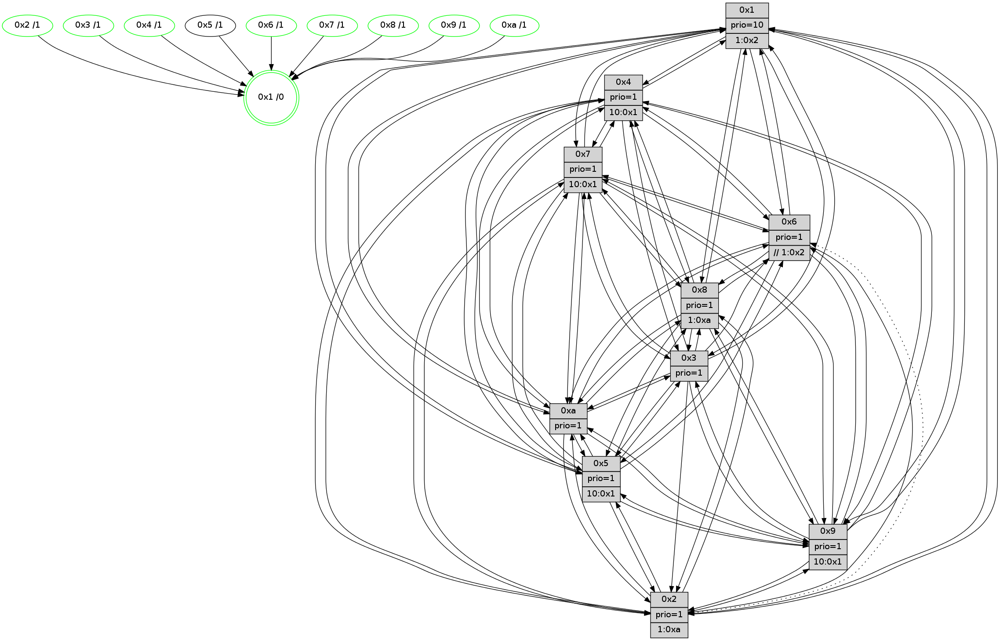

>> << IDX [start] -100 -25 -5 +0 +5 +25 +100 [1360.00450015]
 Previous packets
----------------------------------------------------------------------
1355.225736 beacon01(faad) #0 coord=01,02,03,04,05,06,07,0a,09,08 cycle=688.0ms assoc
-- color-indic=1 64 47 f2
1355.235717 beacon02(faad) #0 coord=01,02,03,04,05,06,07,0a,09,08 cycle=688.0ms assoc 64 d4 c3
1355.245719 beacon03(faad) #0 coord=01,02,03,04,05,06,07,0a,09,08 cycle=688.0ms assoc 64 ae 8e
1355.255720 beacon04(faad) #0 coord=01,02,03,04,05,06,07,0a,09,08 cycle=688.0ms assoc 64 d9 64
1355.265718 beacon05(faad) #0 coord=01,02,03,04,05,06,07,0a,09,08 cycle=688.0ms assoc 64 a3 29
1355.275718 beacon06(faad) #0 coord=01,02,03,04,05,06,07,0a,09,08 cycle=688.0ms assoc 64 2d fe
1355.285720 beacon07(faad) #0 coord=01,02,03,04,05,06,07,0a,09,08 cycle=688.0ms assoc 64 57 b3
1355.295725 beacon0a(faad) #0 coord=01,02,03,04,05,06,07,0a,09,08 cycle=688.0ms assoc 64 26 b8
1355.315724 beacon08(faad) #0 coord=01,02,03,04,05,06,07,0a,09,08 cycle=688.0ms assoc 64 d2 22
1355.328863 [Hello(10): seq=797 sym=6,2,3,8,7,5,9,4,1 sysInfo=hasWarning stat=6:12,4,13,3/2:11,14,1,0/3:0,11,2,14/8:10,9,13,3/7:13,13,10,9/5:0,15,10,0/9:7,9,1,0/4:6,10,7,1/1:11,15,9,1]
1355.331903 [Hello(4): seq=864 sym=5,8,6,2,3,9,7,10,1 sysInfo= stat=5:2,12,2,1/8:2,5,0,0/6:13,0,10,14/2:6,12,2,0/3:13,11,11,14/9:8,4,11,1/7:0,1,0,0/10:6,2,15,14/1:5,9,14,1]
1355.334715 [Color(4) seq=403 @0:0 prio=1 >10.@1,1.@2,1.@3,1.@5]
1355.338110 [Color(1) seq=544 @0:0 prio=10 >1.@2,1.@3,1.@4,1.@5]
1355.340488 [Hello(8): seq=808 sym=5,2,3,7,9,6,4,10,1 sysInfo=hasWarning stat=5:3,15,3,0/2:12,6,8,12/3:7,9,12,3/7:3,11,1,1/9:2,4,6,4/6:9,7,10,15/4:9,1,2,0/10:11,13,11,5/1:10,0,15,0]
1355.343629 [Color(8) seq=463 @0:0 prio=1 >1.@a]
1355.348957 [Hello(7): seq=864 sym=2,3,5,6,4,8,9,10,1 sysInfo=hasWarning stat=2:15,14,0,3/3:10,4,3,3/5:5,0,7,2/6:1,14,1,11/4:9,2,3,0/8:2,8,8,0/9:11,12,7,1/10:15,6,13,7/1:15,3,12,0]
1355.353066 [Color(7) seq=392 @0:0 prio=1 >10.@1,1.@5,1.@6,1.@8]
----------------------------------------------------------------------
1356.013866 beacon01(faad) #0 coord=01,02,03,04,05,06,07,0a,09,08 cycle=688.0ms assoc
-- color-indic=1 64 83 fc
1356.023848 beacon02(faad) #0 coord=01,02,03,04,05,06,07,0a,09,08 cycle=688.0ms assoc 64 10 cd
1356.033849 beacon03(faad) #0 coord=01,02,03,04,05,06,07,0a,09,08 cycle=688.0ms assoc 64 6a 80
1356.043850 beacon04(faad) #0 coord=01,02,03,04,05,06,07,0a,09,08 cycle=688.0ms assoc 64 1d 6a
1356.053849 beacon05(faad) #0 coord=01,02,03,04,05,06,07,0a,09,08 cycle=688.0ms assoc 64 67 27
1356.063849 beacon06(faad) #0 coord=01,02,03,04,05,06,07,0a,09,08 cycle=688.0ms assoc 64 e9 f0
1356.073852 beacon07(faad) #0 coord=01,02,03,04,05,06,07,0a,09,08 cycle=688.0ms assoc 64 93 bd
1356.083856 beacon0a(faad) #0 coord=01,02,03,04,05,06,07,0a,09,08 cycle=688.0ms assoc 64 e2 b6
1356.103854 beacon08(faad) #0 coord=01,02,03,04,05,06,07,0a,09,08 cycle=688.0ms assoc 64 16 2c
1356.115658 [Hello(5): seq=865 sym=7,6,4,3,1,9,8,10,2 sysInfo=hasWarning stat=7:12,0,11,0/6:2,7,10,4/4:1,6,0,14/3:8,15,5,1/1:0,1,0,0/9:13,13,13,10/8:14,0,14,4/10:15,14,14,9/2:6,13,5,7]
1356.118604 [Color(10) seq=454 @0:0 prio=1]
1356.119940 [Color(9) seq=424 @0:0 prio=1 >10.@1,1.@5,1.@a]
1356.121473 [Hello(6): seq=865 sym=5,4,7,9,8,10,1 sysInfo=hasWarning stat=5:3,11,1,3/4:10,9,5,7/7:11,7,15,15/9:4,1,12,10/8:8,15,8,6/10:7,7,2,13/1:0,12,13,1]
1356.124026 [Hello(3): seq=865 sym=1,7,6,2,4,8,9,10,5 sysInfo=hasWarning stat=1:7,1,0,0/7:7,6,5,14/6:3,6,2,0/2:10,3,14,2/4:14,0,8,12/8:14,6,15,5/9:14,14,8,0/10:13,10,11,5/5:13,7,9,0]
1356.126863 [Color(3) seq=494 @0:0 prio=1]
1356.128321 [Hello(2): seq=861 sym=4,5,7,6,3,9,8,10,1 sysInfo=hasWarning stat=4:1,8,2,12/5:7,0,10,2/7:14,6,3,1/6:2,5,2,0/3:1,4,1,0/9:7,1,5,9/8:8,8,14,12/10:1,11,0,11/1:4,11,9,0]
1356.132438 [Color(2) seq=441 @0:0 prio=1 >1.@a]
1356.136446 [Hello(1): seq=774 sym=4,2,9,5,10,3,8,6,7 sysInfo=coloring-mode-on,ColoringModeRequestCalled stat=4:7,13,3,2/2:3,4,11,5/9:0,12,1,1/5:9,7,1,8/10:15,11,15,8/3:3,13,13,10/8:3,6,14,2/6:8,10,13,0/7:3,8,6,1]
----------------------------------------------------------------------
1356.801996 beacon01(faad) #0 coord=01,02,03,04,05,06,07,0a,09,08 cycle=688.0ms assoc
-- color-indic=1 64 3f f9
1356.811978 beacon02(faad) #0 coord=01,02,03,04,05,06,07,0a,09,08 cycle=688.0ms assoc 64 ac c8
1356.821978 beacon03(faad) #0 coord=01,02,03,04,05,06,07,0a,09,08 cycle=688.0ms assoc 64 d6 85
1356.831979 beacon04(faad) #0 coord=01,02,03,04,05,06,07,0a,09,08 cycle=688.0ms assoc 64 a1 6f
1356.841979 beacon05(faad) #0 coord=01,02,03,04,05,06,07,0a,09,08 cycle=688.0ms assoc 64 db 22
1356.851978 beacon06(faad) #0 coord=01,02,03,04,05,06,07,0a,09,08 cycle=688.0ms assoc 64 55 f5
1356.861979 beacon07(faad) #0 coord=01,02,03,04,05,06,07,0a,09,08 cycle=688.0ms assoc 64 2f b8
1356.871984 beacon0a(faad) #0 coord=01,02,03,04,05,06,07,0a,09,08 cycle=688.0ms assoc 64 5e b3
1356.891984 beacon08(faad) #0 coord=01,02,03,04,05,06,07,0a,09,08 cycle=688.0ms assoc 64 aa 29
1356.904490 [Hello(9): seq=809 sym=2,5,3,4,7,6,8,10,1 sysInfo=hasWarning stat=2:0,13,12,10/5:4,4,14,7/3:0,2,5,3/4:1,8,0,1/7:2,15,5,4/6:14,4,11,13/8:0,14,1,5/10:7,7,3,5/1:1,3,0,1]
1356.907532 [Hello(4): seq=865 sym=5,8,6,2,3,9,7,10,1 sysInfo= stat=5:3,12,2,1/8:3,6,0,0/6:14,1,10,14/2:7,13,2,0/3:13,12,11,14/9:9,5,11,1/7:1,2,0,0/10:6,3,15,14/1:6,10,14,1]
1356.910869 [STC(1) #0.229 tree-change,inconsistent-stability,stable,to-color d=0]
1356.913119 [Color(1) seq=545 @0:0 prio=10 >1.@2,1.@3,1.@4,1.@5]
1356.915608 [Color(4) seq=404 @0:0 prio=1 >10.@1,1.@2,1.@3,1.@5]
1356.917512 [Hello(10): seq=798 sym=6,2,3,8,7,5,9,4,1 sysInfo=hasWarning stat=6:13,5,13,3/2:12,15,1,0/3:0,12,2,14/8:11,10,13,3/7:14,14,10,9/5:1,15,10,0/9:7,10,1,0/4:7,11,7,1/1:12,0,9,1]
1356.921978 [Color(8) seq=464 @0:0 prio=1 >1.@a]
1356.932383 [Hello(7): seq=865 sym=2,3,5,6,4,8,9,10,1 sysInfo=hasWarning stat=2:0,15,0,3/3:10,5,3,3/5:6,0,7,2/6:2,15,1,11/4:9,2,3,0/8:2,8,8,0/9:11,13,7,1/10:0,7,13,7/1:0,3,12,0]
1356.936785 [Color(7) seq=393 @0:0 prio=1 >10.@1,1.@5,1.@6,1.@8]
----------------------------------------------------------------------
1357.590126 beacon01(faad) #0 coord=01,02,03,04,05,06,07,0a,09,08 cycle=688.0ms assoc
-- color-indic=1 64 0b e1
1357.600109 beacon02(faad) #0 coord=01,02,03,04,05,06,07,0a,09,08 cycle=688.0ms assoc 64 98 d0
1357.610110 beacon03(faad) #0 coord=01,02,03,04,05,06,07,0a,09,08 cycle=688.0ms assoc 64 e2 9d
1357.620109 beacon04(faad) #0 coord=01,02,03,04,05,06,07,0a,09,08 cycle=688.0ms assoc 64 95 77
1357.630110 beacon05(faad) #0 coord=01,02,03,04,05,06,07,0a,09,08 cycle=688.0ms assoc 64 ef 3a
1357.640110 beacon06(faad) #0 coord=01,02,03,04,05,06,07,0a,09,08 cycle=688.0ms assoc 64 61 ed
1357.650109 beacon07(faad) #0 coord=01,02,03,04,05,06,07,0a,09,08 cycle=688.0ms assoc 64 1b a0
1357.660114 beacon0a(faad) #0 coord=01,02,03,04,05,06,07,0a,09,08 cycle=688.0ms assoc 64 6a ab
1357.680114 beacon08(faad) #0 coord=01,02,03,04,05,06,07,0a,09,08 cycle=688.0ms assoc 64 9e 31
1357.691078 [Hello(1): seq=775 sym=4,2,9,5,10,3,8,6,7 sysInfo=coloring-mode-on,ColoringModeRequestCalled stat=4:7,14,3,2/2:3,4,11,5/9:1,12,1,1/5:9,7,1,8/10:0,11,15,8/3:3,13,13,10/8:3,7,14,2/6:8,10,13,0/7:4,9,6,1]
1357.695512 [Color(10) seq=455 @0:0 prio=1]
1357.699538 [STC(6)->1 #0.229 tree-change,inconsistent-stability,stable,to-color d=1]
1357.701250 [STC(3)->1 #0.229 tree-change,inconsistent-stability,stable,to-color d=1]
1357.703347 [Hello(2): seq=862 sym=4,5,7,6,3,9,8,10,1 sysInfo=hasWarning stat=4:2,9,2,12/5:8,0,10,2/7:15,7,3,1/6:2,5,2,0/3:1,4,1,0/9:8,1,5,9/8:8,9,14,12/10:2,12,0,11/1:5,12,10,0]
1357.706790 [STC(2)->1 #0.229 tree-change,inconsistent-stability,stable,to-color d=1]
1357.708171 [Color(6) seq=498 @0:0 prio=1 >>1.@2,1.@3,1.@4]
1357.710024 [Color(2) seq=442 @0:0 prio=1 >1.@a]
1357.713714 [Color(3) seq=495 @0:0 prio=1]
1357.716594 [Hello(5): seq=866 sym=7,6,4,3,1,9,8,10,2 sysInfo=hasWarning stat=7:13,1,11,0/6:3,7,10,4/4:2,7,0,14/3:8,0,5,1/1:1,2,1,0/9:14,14,13,10/8:14,1,14,4/10:15,15,14,9/2:7,14,5,7]
1357.719127 [Color(9) seq=425 @0:0 prio=1 >10.@1,1.@5,1.@a]
1357.721346 [STC(5)->1 #0.229 to-color d=1]
----------------------------------------------------------------------
1358.378256 beacon01(faad) #0 coord=01,02,03,04,05,06,07,0a,09,08 cycle=688.0ms assoc
-- color-indic=1 64 b7 e4
1358.388239 beacon02(faad) #0 coord=01,02,03,04,05,06,07,0a,09,08 cycle=688.0ms assoc 64 24 d5
1358.398238 beacon03(faad) #0 coord=01,02,03,04,05,06,07,0a,09,08 cycle=688.0ms assoc 64 5e 98
1358.408238 beacon04(faad) #0 coord=01,02,03,04,05,06,07,0a,09,08 cycle=688.0ms assoc 64 29 72
1358.418239 beacon05(faad) #0 coord=01,02,03,04,05,06,07,0a,09,08 cycle=688.0ms assoc 64 53 3f
1358.428239 beacon06(faad) #0 coord=01,02,03,04,05,06,07,0a,09,08 cycle=688.0ms assoc 64 dd e8
1358.438240 beacon07(faad) #0 coord=01,02,03,04,05,06,07,0a,09,08 cycle=688.0ms assoc 64 a7 a5
1358.448245 beacon0a(faad) #0 coord=01,02,03,04,05,06,07,0a,09,08 cycle=688.0ms assoc 64 d6 ae
1358.468244 beacon08(faad) #0 coord=01,02,03,04,05,06,07,0a,09,08 cycle=688.0ms assoc 64 22 34
1358.479775 [Hello(10): seq=799 sym=6,2,3,8,7,5,9,4,1 sysInfo=hasWarning stat=6:13,6,14,3/2:13,0,2,0/3:0,13,3,14/8:11,11,13,3/7:15,15,10,9/5:2,15,11,0/9:7,11,1,0/4:7,11,7,1/1:13,0,9,1]
1358.483222 [Hello(7): seq=866 sym=2,3,5,6,4,8,9,10,1 sysInfo=hasWarning stat=2:1,0,1,3/3:10,6,4,3/5:7,0,8,2/6:3,0,2,11/4:9,2,3,0/8:2,8,8,0/9:12,14,7,1/10:0,8,13,7/1:1,3,12,0]
1358.485736 [Hello(8): seq=810 sym=5,2,3,7,9,6,4,10,1 sysInfo=hasWarning stat=5:5,15,4,0/2:14,8,9,12/3:7,11,13,3/7:5,13,1,1/9:4,6,6,4/6:11,9,11,15/4:9,1,2,0/10:11,15,11,5/1:12,0,15,0]
1358.488264 [Color(7) seq=394 @0:0 prio=1 >10.@1,1.@5,1.@6,1.@8]
1358.491706 [Hello(4): seq=866 sym=5,8,6,2,3,9,7,10,1 sysInfo= stat=5:4,12,3,1/8:3,7,0,0/6:15,2,11,14/2:8,14,3,0/3:13,13,12,14/9:10,6,12,1/7:2,3,0,0/10:7,3,15,14/1:7,10,14,1]
1358.494641 [Color(1) seq=546 @0:0 prio=10 >1.@2,1.@3,1.@4,1.@5]
1358.496452 [Color(4) seq=405 @0:0 prio=1 >10.@1,1.@2,1.@3,1.@5]
1358.506045 [Color(8) seq=465 @0:0 prio=1 >1.@a]
----------------------------------------------------------------------
1359.166385 beacon01(faad) #0 coord=01,02,03,04,05,06,07,0a,09,08 cycle=688.0ms assoc
-- color-indic=1 64 73 ea
1359.176368 beacon02(faad) #0 coord=01,02,03,04,05,06,07,0a,09,08 cycle=688.0ms assoc 64 e0 db
1359.186368 beacon03(faad) #0 coord=01,02,03,04,05,06,07,0a,09,08 cycle=688.0ms assoc 64 9a 96
1359.196368 beacon04(faad) #0 coord=01,02,03,04,05,06,07,0a,09,08 cycle=688.0ms assoc 64 ed 7c
1359.206368 beacon05(faad) #0 coord=01,02,03,04,05,06,07,0a,09,08 cycle=688.0ms assoc 64 97 31
1359.216367 beacon06(faad) #0 coord=01,02,03,04,05,06,07,0a,09,08 cycle=688.0ms assoc 64 19 e6
1359.226369 beacon07(faad) #0 coord=01,02,03,04,05,06,07,0a,09,08 cycle=688.0ms assoc 64 63 ab
1359.236374 beacon0a(faad) #0 coord=01,02,03,04,05,06,07,0a,09,08 cycle=688.0ms assoc 64 12 a0
1359.256375 beacon08(faad) #0 coord=01,02,03,04,05,06,07,0a,09,08 cycle=688.0ms assoc 64 e6 3a
1359.267644 [Hello(1): seq=776 sym=4,2,9,5,10,3,8,6,7 sysInfo=coloring-mode-on,ColoringModeRequestCalled stat=4:7,15,3,2/2:4,5,12,5/9:1,13,1,1/5:10,7,2,8/10:1,12,15,8/3:4,14,14,10/8:3,8,14,2/6:8,11,14,0/7:4,9,6,1]
1359.271838 [Hello(5): seq=867 sym=7,6,4,3,1,9,8,10,2 sysInfo=hasWarning stat=7:14,2,11,0/6:3,7,10,4/4:3,8,0,14/3:8,0,5,1/1:2,3,1,0/9:15,14,13,10/8:15,2,14,4/10:15,15,14,9/2:7,14,5,7]
1359.274373 [Hello(2): seq=863 sym=4,5,7,9,8,10,1 asym=6 sysInfo=hasWarning stat=4:3,10,2,12/5:9,0,11,2/7:0,8,3,1/9:8,2,5,9/8:9,10,14,12/10:3,12,0,11/1:6,13,10,0/6:2,5,2,0]
1359.277932 [Hello(6): seq=867 sym=2,5,4,7,9,8,10,1 sysInfo=hasWarning stat=2:0,2,0,0/5:5,11,2,3/4:12,11,5,7/7:13,9,15,15/9:5,2,12,10/8:9,1,8,6/10:9,8,2,13/1:2,14,14,1]
1359.280464 [Hello(3): seq=867 sym=1,7,6,2,4,8,9,10,5 sysInfo=hasWarning stat=1:9,3,1,0/7:9,8,5,14/6:3,6,2,0/2:11,4,14,2/4:0,2,8,12/8:15,8,15,5/9:15,15,8,0/10:15,11,11,5/5:15,7,10,0]
1359.282912 [Color(10) seq=456 @0:0 prio=1]
1359.285412 [Color(2) seq=443 @0:0 prio=1 >1.@a]
1359.286860 [Color(6) seq=499 @0:0 prio=1 >>1.@2,1.@3,1.@4]
1359.289936 [Color(3) seq=496 @0:0 prio=1]
----------------------------------------------------------------------
1359.954517 beacon01(faad) #0 coord=01,02,03,04,05,06,07,0a,09,08 cycle=688.0ms assoc
-- color-indic=1 64 cf ef
1359.964499 beacon02(faad) #0 coord=01,02,03,04,05,06,07,0a,09,08 cycle=688.0ms assoc 64 5c de
1359.974499 beacon03(faad) #0 coord=01,02,03,04,05,06,07,0a,09,08 cycle=688.0ms assoc 64 26 93
1359.984500 beacon04(faad) #0 coord=01,02,03,04,05,06,07,0a,09,08 cycle=688.0ms assoc 64 51 79
1359.994500 beacon05(faad) #0 coord=01,02,03,04,05,06,07,0a,09,08 cycle=688.0ms assoc 64 2b 34